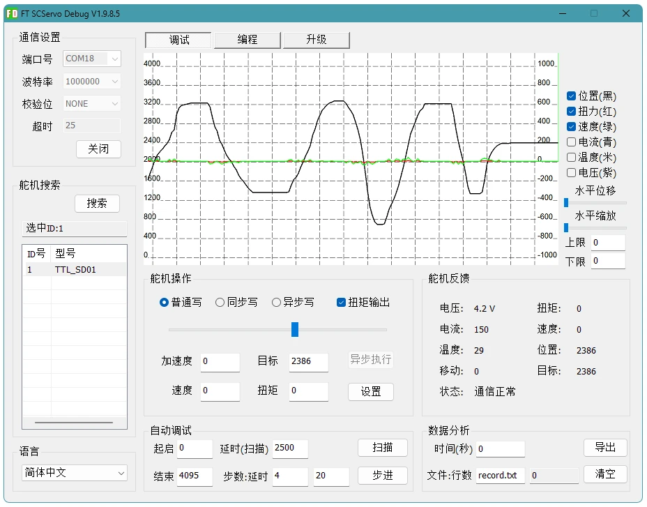

通过总线控制步进电机
多个步进驱动板可设置独立 ID 并接入同一总线，简化机器人系统复杂度。
多设备同时控制WHAT IT SOLVES
传统步进电机控制方案需要控制器持续输出脉冲，并自己处理速度曲线、同步和限位。TTL Stepper Driver (A) 在底层实现这些运动控制，让主控只需要通过 TTL 总线发送简单指令即可轻松控制步进电机。
多个步进驱动板可设置独立 ID 并接入同一总线，简化机器人系统复杂度。
多设备同时控制通过速度和加速度参数控制电机转动，自动进行插值计算，减少突然启动、停止带来的冲击。
运动更可控当需要限位开关时，最小位与最大位限位接口可阻止电机继续向危险方向运动，不需要应用层轮询处理。
更安全的机构保护可读取位置、速度、电压、温度、移动标志等状态，方便调试和上层控制闭环。
可反馈驱动器状态CONTROL MODES


TTL BUS SYSTEM
PC、树莓派、Jetson 等控制器可通过 TTL Adapter (A) 的 USB 接口接入；
ESP32、STM32 等控制器可通过 TTL Adapter (A) 的 UART 接口接入（对于有 PCB 设计能力的用户，可以通过 UART 转单线 TTL 的电路接入）。
多个驱动板、编码器等总线设备可以组成机器人底层运动和感知网络。
EASY TO START
Wiki 已提供 FD 调试软件、Python 快速上手、C++ / Arduino 快速上手等资料。新用户可以先完成设备搜索和参数配置，再用例程验证位置、速度、电流、限位和同步动作。
连接步进电机、电源和 TTL Adapter (A)
由于同一根总线上不可以有相同的 ID，初次使用时需要修改 ID
产品 Wiki 中提供详细教程，并且开源 SDK、Python 和 C++ 例程，方便用户快速上手
FD SOFTWARE
我们提供 FD 软件，可作为第一步验证工具：先确认设备在线，再修改 ID、调整电流、速度、加速度和模式参数，简化调试过程。



BOARD INTERFACES

SPECIFICATIONS
PACKAGE CONTENTS
标准套装包含驱动板、总线连接线、电机连接线、同步线、散热与安装附件，开箱后即可进行基础接线和功能验证。

| 名称 | 数量 |
|---|---|
| TTL Stepper Driver (A) | x1 |
| 5264-3P 连接线 25cm | x1 |
| 步进电机连接线 25cm | x1 |
| GH1.25-3P 连接线 30cm | x1 |
| 铝基板散热片 | x1 |
| 硅胶导热贴 | x1 |
| 圆头螺丝 | M1.4*7 x3 |
| 螺母 | M1.4*1.4*2.3 x6 |
| 垫圈 | 3*6*1.5 x2 |
DEVELOPMENT SUPPORT
调试工具、SDK 与开发教程等资料可参考产品 Wiki。